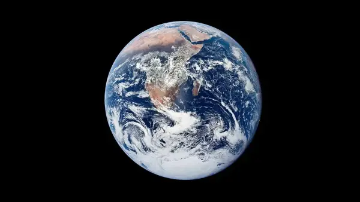
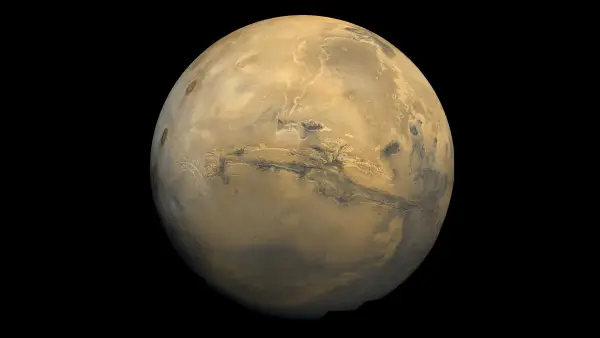
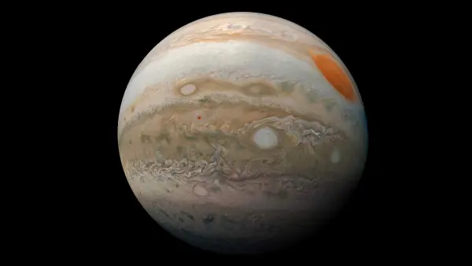
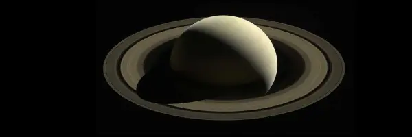
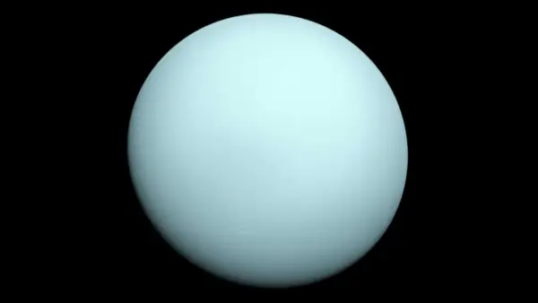
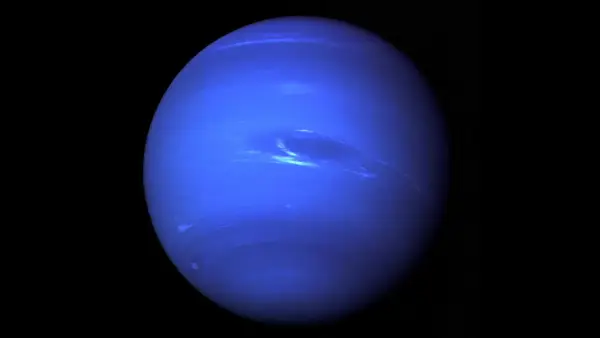

Los planetas del sistema solar se dividen en dos grupos
Planetas interiores
Son los 4 planetas a partir del sol: Mercurio, Venus, la Tierra y Marte.Estos planetas interiores tambien se conocen como planetas terrestres porque tienen superficie solida

Mercurio
Mercurio es el planeta más cercano al Sol y el planeta más pequeño de nuestro sistema solar

Venus
Venus es el segundo planeta desde el Sol y el sexto planeta mas grande

Tierra
Tierra
La Tierra, nuestro planeta natal, es el tercer planeta desde el Sol y el quinto más grande

Marte
Marte
Marte es el cuarto planeta desde el Sol y el séotimo planeta más grande
Planetas exteriores
Son los gigantes del sistema solar y no tienen superficies duras. En cambio, tienen gases en espiral sobre el nucleo. Jupiter y Saturno son gigantes gaseosos. Urano y Neptuno son gigantes de hielo.

Júpiter
Júpiter
Júpiter es el quinto planeta a partir del Sol y el planeta más grande de nuestro sistema solar

Saturno
Saturno
Saturno es el sexto planeta a partir del Sol, el segundo planeta más grande de nuestro sistema solar

Urano
Urano
Urano es el séptimo planeta desde el Sol y el tercer planeta más grande de nuestro sistema solar

Neptuno